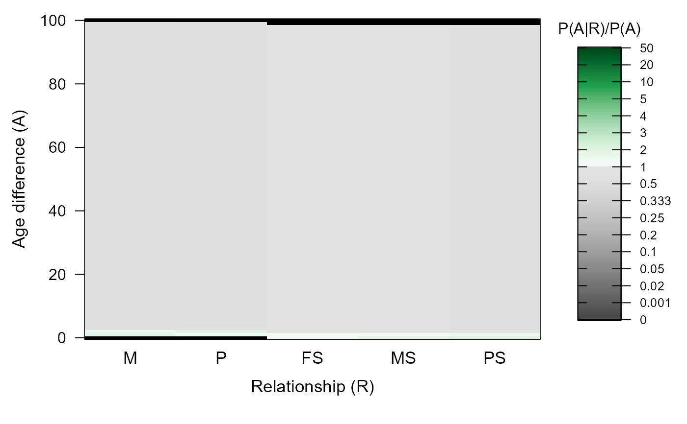
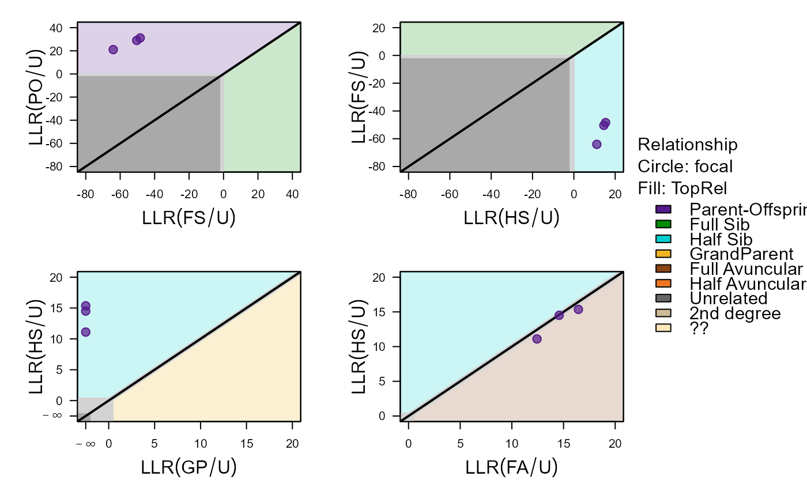
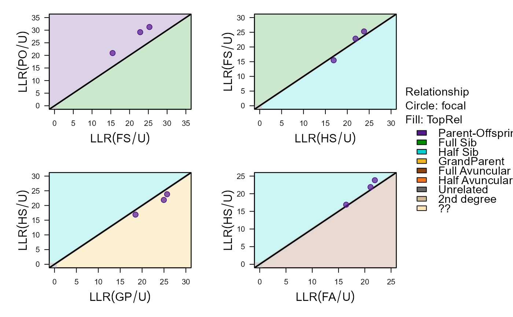
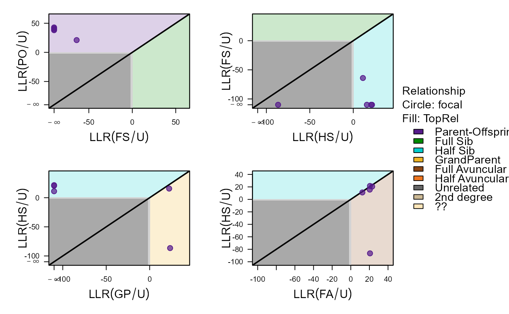
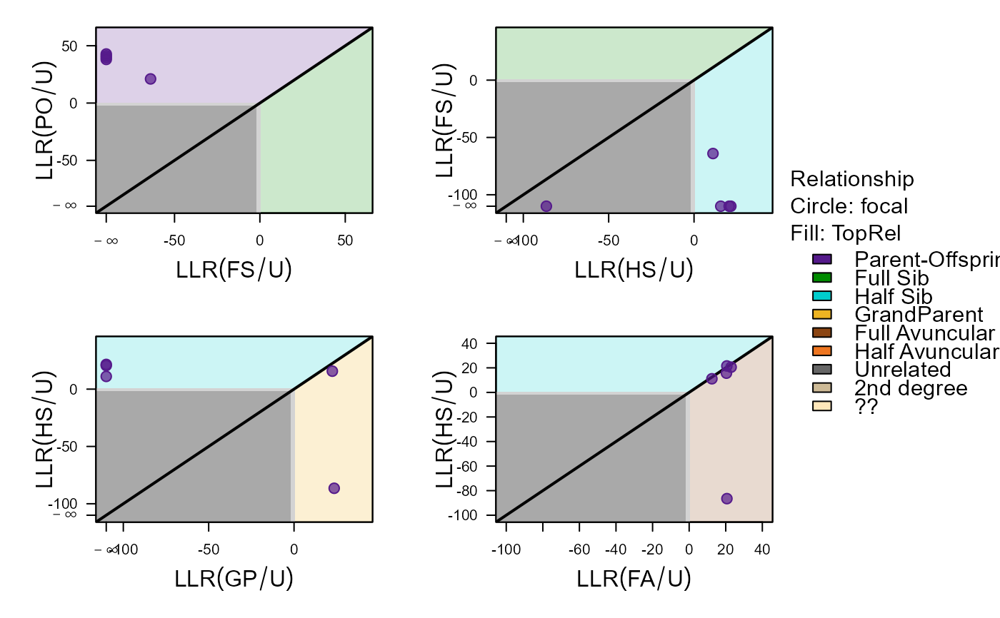

Calculate Likelihoods for Alternative Relationships
CalcPairLL.RdFor each specified pair of individuals, calculate the log10-likelihoods of being PO, FS, HS, GP, FA, HA, U (see Details). Individuals must be genotyped or have at least one genotyped offspring.
NOTE values \(>0\) are various NA types, see 'Likelihood
special codes' in 'Value' section below.
Usage
CalcPairLL(
Pairs = NULL,
GenoM = NULL,
Pedigree = NULL,
LifeHistData = NULL,
AgePrior = TRUE,
SeqList = NULL,
Module = "ped",
Complex = "full",
Herm = "no",
InclDup = FALSE,
Err = 1e-04,
ErrFlavour = "version2.9",
Tassign = 0.5,
Tfilter = -2,
quiet = FALSE,
Plot = TRUE
)Arguments
- Pairs
dataframe with columns
ID1andID2, and optionally- Sex1
Sex of ID1, 1=female, 2=male, 3=unknown, or
NAto take fromLifeHistData. The sex of individuals occurring as parent inPedigreecannot be altered.- Sex2
Sex of ID2
- AgeDif
Age difference in whole time units, BirthYear1 - BirthYear2 (i.e. positive if ID2 is born before ID1). If
NA, calculated fromLifeHistData. Use '999' to explicitly specify 'unknown'.- focal
relationship character abbreviation; PO, FS, HS, GP or U. See Details for its effect and explanation of abbreviations. Default: U.
- patmat
1=maternal relatives, 2=paternal relatives. Only relevant for HS & GP, for which it defaults to Sex1, or 1 if Sex1=3, but is currently only predictably implemented for pairs of two genotyped individuals. Always equal to Sex2 for PO pairs when Sex2 is known.
- dropPar1
Drop the parents of
ID1before calculating the pair likelihood, rather than conditioning on them; choose from 'none', 'dam', 'sire', or 'both'. See example. If e.g. the pair shares a common mother, 'none' and 'sire' will condition on this shared mother and not calculate the likelihood that they are maternal siblings, while dropPar1='dam' or 'both' will calculate that likelihood, and the other likelihoods as if the mother of ID1 were unknown.- dropPar2
as
dropPar1, forID2
- GenoM
numeric matrix with genotype data: One row per individual, one column per SNP, coded as 0, 1, 2, missing values as a negative number or NA. You can reformat data with
GenoConvert, or use other packages to get it into a genlight object and then useas.matrix.- Pedigree
dataframe with columns id-dam-sire; likelihoods will be calculated conditional on the pedigree. May include non-genotyped individuals, which will be treated as dummy individuals.
- LifeHistData
data.frame with up to 6 columns:
- ID
max. 30 characters long
- Sex
1 = female, 2 = male, 3 = unknown, 4 = hermaphrodite, other numbers or NA = unknown
- BirthYear
birth or hatching year, integer, with missing values as NA or any negative number.
- BY.min
minimum birth year, only used if BirthYear is missing
- BY.max
maximum birth year, only used if BirthYear is missing
- Year.last
Last year in which individual could have had offspring. Can e.g. in mammals be the year before death for females, and year after death for males.
"Birth year" may be in any arbitrary discrete time unit relevant to the species (day, month, decade), as long as parents are never born in the same time unit as their offspring, and only integers are used. Individuals do not need to be in the same order as in `GenoM', nor do all genotyped individuals need to be included.
- AgePrior
logical (
TRUE/FALSE) whether to estimate the ageprior fromPedigreeandLifeHistData, or a matrix as generated byMakeAgePriorand included in thesequoiaoutput. TheAgePrioraffects which relationships are considered possible: only those where \(P(A|R) / P(A) > 0\). WhenTRUE,MakeAgePrioris called using its default values. WhenFALSE, all relationships are considered possible for all age differences, except that parent-offspring pairs cannot have age difference zero, and grand-parental pairs have an age difference of at least two.- SeqList
list with output from
sequoia. If input parameterPedigree=NULL,SeqList$Pedigreewill be used if present, andSeqList$PedigreeParotherwise. IfSeqList$Specsis present, input parameters with the same name as its items are ignored. The list elements 'LifeHist', 'AgePriors', and 'ErrM' are also used if present, and override the corresponding input parameters.- Module
if
ped(full pedigree), turn any non-genotyped parents inPedigreeinto dummies to condition upon. Ifpar, ignore any non-genotyped parents.- Complex
Breeding system complexity. Either "full" (default), "simp" (simplified, no explicit consideration of inbred relationships), "mono" (monogamous).
- Herm
Hermaphrodites, either "no", "A" (distinguish between dam and sire role, default if at least 1 individual with sex=4), or "B" (no distinction between dam and sire role). Both of the latter deal with selfing.
- InclDup
logical, include the likelihood for the two samples to be duplicates (originating from the same individual) in the output?
- Err
assumed per-locus genotyping error rate, as a single number, or a length 3 vector with P(hom|hom), P(het|hom), P(hom|het), or a 3x3 matrix. See details below. The error rate is presumed constant across SNPs, and missingness is presumed random with respect to actual genotype. Using
Err>5% is not recommended, andErr>10% strongly discouraged. SeeErr_RADseqto convert per-allele rates at homozygous and heterozygous sites to the required length-3 vector, andErrToMfor further genotyping error details.- ErrFlavour
function that takes
Err(single number) as input, and returns a length 3 vector or 3x3 matrix, or choose from inbuilt options 'version2.9', 'version2.0', 'version1.3', or 'version1.1', referring to the sequoia version in which they were the default. Ignored ifErris a vector or matrix.- Tassign
minimum LLR required for acceptance of proposed relationship, relative to next most likely relationship. Higher values result in more conservative assignments. Must be zero or positive.
- Tfilter
threshold log10-likelihood ratio (LLR) between a proposed relationship versus unrelated, to select candidate relatives. Typically a negative value, related to the fact that unconditional likelihoods are calculated during the filtering steps. More negative values may decrease non-assignment, but will increase computational time.
- quiet
logical, suppress messages
- Plot
logical, display scatter plots by
PlotPairLL.
Value
The Pairs dataframe including all optional columns listed
above, plus the additional columns:
- xx
Log10-Likelihood of this pair having relationship xx, with xx being the relationship abbreviations listed below.
- TopRel
Abbreviation of most likely relationship
- LLR
Log10-Likelihood ratio between most-likely and second most likely relationships. Other LLRs, e.g. between most-likely and unrelated, can easily be computed.
Relationship abbreviations:
- PO
Parent - offspring
- FS
Full siblings
- HS
Half siblings
- GP
Grandparent
- FA
Full avuncular
- HA
Half avuncular and other 3rd degree relationships
- U
Unrelated
- 2nd
Unclear which type of 2nd degree relatives (HS, GP, or FA)
- ??
Unclear which type of 1st, 2nd or 3rd degree relatives
Likelihood special codes:
- 222
Maybe (via) other parent (e.g. focal="GP", but as likely to be maternal as paternal grandparent, and therefore not assignable)
- 333
Excluded from comparison (shouldn't occur)
- 444
Not implemented (e.g. would create an odd double/triple relationship in combination with the provided pedigree)
- 777
Impossible (e.g. a male (Sex2=2) cannot be mother (patmat=1))
- 888
Already assigned in the provided pedigree (see
dropPararguments)- 999
NA. If all values for the pair are999, one or both individuals are not genotyped and not dummifiable.
Details
The same pair may be included multiple times, e.g. with different sex, age difference, or focal relationship, to explore their effect on the likelihoods. Likelihoods are only calculated for relationships that are possible given the age difference, e.g. PO (parent-offspring) is not calculated for pairs with an age difference of 0.
Non-genotyped individuals can be included if they have at least one
genotyped offspring and can be turned into a dummy (see
getAssignCat); to establish this a pedigree must be provided.
Warning 1: There is no check whether the input pedigree is genetically
sensible, it is simply conditioned upon. Checking whether a pedigree is
compatible with the SNP data can be done with CalcOHLLR.
Warning 2: Conditioning on a Pedigree can make computation
orders of magnitude slower.
Why does it say 444 (no can do) for all relationships?
This happens when the pair does not pass the initial check which prevents
impossible configurations in combination with Pedigree. Specifically,
it happens when either or both individuals are a parent in the pedigree, but
the sex in
Pairsis not consistent with thatPairschanges the age differences; it is too complex to check whether or not this still makes all pedigree links valid. Only setting the age difference to 'unknown' viaPairsis possible.
Why does it say 777 (impossible)?
This function uses the same machinery as sequoia, which will to save
time not calculate the likelihood when it is quickly obvious that the pair
cannot be related in the specified manner.
For PO (putative parent-offspring pairs) this is the case when:
the sex of the candidate parent, via
Pairs$Sex2orLifeHistData, does not matchPairs$patmat, which defaults to 1 (maternal relatives, i.e. dam)a dam is already assigned via
PedigreeandPairs$dropPar1 ='none', andPairs$patmat = 1the age difference is zero or otherwise impossible according to the age prior. It is either calculated from
LifeHistDataor specified viaPairs$AgeDif. TheAgePriorcan be specified directly, be taken fromSeqList, or calculated automatically byMakeAgePriorwhen bothPedigreeandLifeHistDataare provided.
Double relationships & focal relationship
Especially when Complex='full', not only the seven relationship alternatives listed above are considered, but a whole range of possible double and even triple relationships. For example, mother A and offspring B (PO) may also be paternal half-siblings (HS, A and A's mother mated with same male), grandmother and grand-offspring (GP, B's father is A's son), or paternal aunt (B's father is a full or half sib of A).
The likelihood reported as 'LL_PO' is the most-likely one of the possible alternatives, among those that are not impossible due to age differences or due to the pedigree (as reconstructed up to that point). Whether e.g. the likelihood to be both PO & HS is counted as PO or as HS, depends on the situation and is determined by the variable 'focal': During parentage assignment, it is counted as PO but not HS, while during sibship clustering, it is counted as HS but not PO – not omitting from the alternative relationship would result in a deadlock.
Dummy individuals
For historical reasons, the relationships between a dummy ID1 and ID2 are reported *between the sibship and ID2*. So,
- PO
ID2 replaces dummy ID1; or merge dummy ID2 with dummy ID1
- FS, HS
ID1 parent of ID2
- GP
ID2 parent of ID1
- FA,HA
ID2 FS resp. HS of ID1
If ID1 is genotyped and ID2 is a dummy, the relationships are as when ID2 is genotyped.
If you wish to retrieve likelihoods for a different set of relationships, please contact me at jisca.huisman@gmail.com .
See also
PlotPairLL to plot alternative relationship pairs from
the output; LLtoProb to transform likelihoods to
probabilities; CalcParentProbs which uses this function to
calculate parental probabilities; GetRelM to find all
pairwise relatives according to the pedigree; GetMaybeRel to
get likely relative pairs based on the genetic data.
Examples
# Likelihoods depend on the presumed genotyping error rate:
CalcPairLL(Pairs = data.frame(ID1='i042_2003_F', ID2='i015_2001_F'),
GenoM = Geno_griffin, Err = 1e-7, Plot=FALSE)
#> ℹ Not conditioning on any pedigree
#> ID1 ID2 Sex1 Sex2 AgeDif focal patmat dropPar1 dropPar2
#> 1 i042_2003_F i015_2001_F 3 3 NA U 1 none none
#> PO FS HS GP FA HA U TopRel LLR
#> 1 -319.07 -323.42 -319.01 -322.13 -321.05 -322.33 -337.08 HS 0.06
CalcPairLL(Pairs = data.frame(ID1='i042_2003_F', ID2='i015_2001_F'),
GenoM = Geno_griffin, Err = 1e-3, Plot=FALSE)
#> ℹ Not conditioning on any pedigree
#> ID1 ID2 Sex1 Sex2 AgeDif focal patmat dropPar1 dropPar2
#> 1 i042_2003_F i015_2001_F 3 3 NA U 1 none none
#> PO FS HS GP FA HA U TopRel LLR
#> 1 -315.1 -323.38 -319.01 -322.11 -321.06 -322.36 -337.07 PO 3.91
## likelihoods underlying parent LLR in pedigree:
# Example: dams for bottom 3 individuals
tail(SeqOUT_griffin$PedigreePar, n=3)
#> id dam sire LLRdam LLRsire LLRpair OHdam OHsire
#> 140 i198_2010_M i166_2009_F <NA> 8.62 NA NA 1 NA
#> 141 i199_2010_F i165_2009_F i141_2008_M 14.67 4.96 16.17 0 0
#> 142 i200_2010_F i166_2009_F i142_2008_M 14.41 5.56 15.63 0 0
#> MEpair
#> 140 NA
#> 141 0
#> 142 0
# set up dataframe with these pairs. LLRdam & LLRsire ignore any co-parent
Pairs_d <- data.frame(ID1 = SeqOUT_griffin$PedigreePar$id[140:142],
ID2 = SeqOUT_griffin$PedigreePar$dam[140:142],
focal = "PO",
dropPar1 = 'both')
# Calculate LL's, conditional on the rest of the pedigree + age differences
CalcPairLL(Pairs_d, GenoM = Geno_griffin, Err = 1e-04,
LifeHistData = LH_griffin, Pedigree = SeqOUT_griffin$PedigreePar)
#> ℹ Conditioning on pedigree with 142 individuals, 65 dams and 79 sires

#> ℹ Ageprior: Pedigree-based, overlapping generations, flattened, MaxAgeParent = 99,99
#> Transferring input pedigree ...

#> ID1 ID2 Sex1 Sex2 AgeDif focal patmat dropPar1 dropPar2
#> 1 i198_2010_M i166_2009_F 2 1 1 PO 1 both none
#> 2 i199_2010_F i165_2009_F 1 1 1 PO 1 both none
#> 3 i200_2010_F i166_2009_F 1 1 1 PO 1 both none
#> PO FS HS GP FA HA U TopRel LLR
#> 1 -289.23 -374.32 -299.18 777 -297.85 -300.15 -310.28 PO 8.62
#> 2 -279.66 -359.15 -295.41 777 -294.33 -297.09 -310.77 PO 14.67
#> 3 -283.94 -363.30 -298.42 777 -298.35 -299.93 -312.93 PO 14.41
# LLR changes when ignoring age and/or pedigree, as different relationships
# become (im)possible
CalcPairLL(Pairs_d, GenoM = Geno_griffin, Err = 1e-04)
#> ℹ Not conditioning on any pedigree

#> ID1 ID2 Sex1 Sex2 AgeDif focal patmat dropPar1 dropPar2
#> 1 i198_2010_M i166_2009_F 3 3 NA PO 1 both none
#> 2 i199_2010_F i165_2009_F 3 3 NA PO 1 both none
#> 3 i200_2010_F i166_2009_F 3 3 NA PO 1 both none
#> PO FS HS GP FA HA U TopRel LLR
#> 1 -308.78 -314.22 -312.81 -311.20 -313.25 -315.13 -329.70 PO 2.42
#> 2 -304.43 -310.40 -311.86 -309.98 -313.78 -317.06 -335.69 PO 5.54
#> 3 -303.14 -309.52 -310.47 -307.39 -311.26 -315.02 -332.35 PO 4.24
# LLRpair is calculated conditional on co-parent, and min. of dam & sire LLR
Pairs_d$dropPar1 <- 'dam'
Pairs_s <- data.frame(ID1 = SeqOUT_griffin$PedigreePar$id[141:142],
ID2 = SeqOUT_griffin$PedigreePar$sire[141:142],
focal = "PO",
dropPar1 = 'sire')
CalcPairLL(rbind(Pairs_d, Pairs_s), GenoM = Geno_griffin, Err = 1e-04,
LifeHistData = LH_griffin, Pedigree = SeqOUT_griffin$PedigreePar)
#> ℹ Conditioning on pedigree with 142 individuals, 65 dams and 79 sires
 #> ℹ Ageprior: Pedigree-based, overlapping generations, flattened, MaxAgeParent = 99,99
#> Transferring input pedigree ...

#> ID1 ID2 Sex1 Sex2 AgeDif focal patmat dropPar1 dropPar2
#> 1 i198_2010_M i166_2009_F 2 1 1 PO 1 dam none
#> 2 i199_2010_F i165_2009_F 1 1 1 PO 1 dam none
#> 3 i200_2010_F i166_2009_F 1 1 1 PO 1 dam none
#> 4 i199_2010_F i141_2008_M 1 2 2 PO 2 sire none
#> 5 i200_2010_F i142_2008_M 1 2 2 PO 2 sire none
#> PO FS HS GP FA HA U TopRel LLR
#> 1 -289.23 -374.32 -299.18 777.00 -297.85 -300.15 -310.28 PO 8.62
#> 2 -239.97 777.00 -262.19 777.00 -259.82 -266.02 -282.76 PO 19.85
#> 3 -245.87 777.00 -265.52 777.00 -266.47 -271.87 -287.07 PO 19.64
#> 4 -235.68 777.00 -361.87 -251.85 -254.73 -263.57 -275.37 PO 16.17
#> 5 -240.97 777.00 -263.38 -256.61 -258.66 -263.96 -279.04 PO 15.63
## likelihoods underlying LLR in getMaybeRel output:
MaybeRel_griffin$MaybePar[1:5, ]
#> ID1 ID2 TopRel LLR OH BirthYear1 BirthYear2 AgeDif Sex1 Sex2
#> 1 i091_2005_F i118_2006_M PO 8.55 0 NA NA NA 3 3
#> 2 i127_2007_M i197_2010_F PO 7.90 0 NA NA NA 3 3
#> 3 i121_2007_M i175_2009_M PO 7.85 0 NA NA NA 3 3
#> 4 i030_2002_F i061_2004_F PO 7.75 0 NA NA NA 3 3
#> 5 i041_2003_F i080_2004_M PO 7.71 0 NA NA NA 3 3
#> SNPdBoth
#> 1 392
#> 2 392
#> 3 392
#> 4 392
#> 5 392
FivePairs <- MaybeRel_griffin$MaybePar[1:5, c("ID1", "ID2", "Sex1", "Sex2")]
PairLL <- CalcPairLL(Pairs = rbind( cbind(FivePairs, focal = "PO"),
cbind(FivePairs, focal = "HS"),
cbind(FivePairs, focal = "GP")),
GenoM = Geno_griffin, Plot=FALSE)
#> ℹ Not conditioning on any pedigree
PairLL[PairLL$ID1=="i121_2007_M", ]
#> ID1 ID2 Sex1 Sex2 AgeDif focal patmat dropPar1 dropPar2
#> 3 i121_2007_M i175_2009_M 3 3 NA PO 1 none none
#> 8 i121_2007_M i175_2009_M 3 3 NA HS 1 none none
#> 13 i121_2007_M i175_2009_M 3 3 NA GP 1 none none
#> PO FS HS GP FA HA U TopRel LLR
#> 3 -313.21 -324.46 -321.90 -321.51 -322.83 -323.01 -337.98 PO 8.30
#> 8 -313.21 222.00 -321.09 -321.51 -323.01 -321.90 -337.98 PO 7.88
#> 13 -313.21 -324.46 -321.09 -321.51 -322.83 -325.26 -337.98 PO 7.88
# LL(FS)==222 : HSHA, HSGP, and/or FAHA more likely than FS
# LL(GP) higher when focal=HS: GP via 'other' parent also considered
# LL(FA) higher when focal=PO: FAHA, or FS of 'other' parent
#> ℹ Ageprior: Pedigree-based, overlapping generations, flattened, MaxAgeParent = 99,99
#> Transferring input pedigree ...

#> ID1 ID2 Sex1 Sex2 AgeDif focal patmat dropPar1 dropPar2
#> 1 i198_2010_M i166_2009_F 2 1 1 PO 1 dam none
#> 2 i199_2010_F i165_2009_F 1 1 1 PO 1 dam none
#> 3 i200_2010_F i166_2009_F 1 1 1 PO 1 dam none
#> 4 i199_2010_F i141_2008_M 1 2 2 PO 2 sire none
#> 5 i200_2010_F i142_2008_M 1 2 2 PO 2 sire none
#> PO FS HS GP FA HA U TopRel LLR
#> 1 -289.23 -374.32 -299.18 777.00 -297.85 -300.15 -310.28 PO 8.62
#> 2 -239.97 777.00 -262.19 777.00 -259.82 -266.02 -282.76 PO 19.85
#> 3 -245.87 777.00 -265.52 777.00 -266.47 -271.87 -287.07 PO 19.64
#> 4 -235.68 777.00 -361.87 -251.85 -254.73 -263.57 -275.37 PO 16.17
#> 5 -240.97 777.00 -263.38 -256.61 -258.66 -263.96 -279.04 PO 15.63
## likelihoods underlying LLR in getMaybeRel output:
MaybeRel_griffin$MaybePar[1:5, ]
#> ID1 ID2 TopRel LLR OH BirthYear1 BirthYear2 AgeDif Sex1 Sex2
#> 1 i091_2005_F i118_2006_M PO 8.55 0 NA NA NA 3 3
#> 2 i127_2007_M i197_2010_F PO 7.90 0 NA NA NA 3 3
#> 3 i121_2007_M i175_2009_M PO 7.85 0 NA NA NA 3 3
#> 4 i030_2002_F i061_2004_F PO 7.75 0 NA NA NA 3 3
#> 5 i041_2003_F i080_2004_M PO 7.71 0 NA NA NA 3 3
#> SNPdBoth
#> 1 392
#> 2 392
#> 3 392
#> 4 392
#> 5 392
FivePairs <- MaybeRel_griffin$MaybePar[1:5, c("ID1", "ID2", "Sex1", "Sex2")]
PairLL <- CalcPairLL(Pairs = rbind( cbind(FivePairs, focal = "PO"),
cbind(FivePairs, focal = "HS"),
cbind(FivePairs, focal = "GP")),
GenoM = Geno_griffin, Plot=FALSE)
#> ℹ Not conditioning on any pedigree
PairLL[PairLL$ID1=="i121_2007_M", ]
#> ID1 ID2 Sex1 Sex2 AgeDif focal patmat dropPar1 dropPar2
#> 3 i121_2007_M i175_2009_M 3 3 NA PO 1 none none
#> 8 i121_2007_M i175_2009_M 3 3 NA HS 1 none none
#> 13 i121_2007_M i175_2009_M 3 3 NA GP 1 none none
#> PO FS HS GP FA HA U TopRel LLR
#> 3 -313.21 -324.46 -321.90 -321.51 -322.83 -323.01 -337.98 PO 8.30
#> 8 -313.21 222.00 -321.09 -321.51 -323.01 -321.90 -337.98 PO 7.88
#> 13 -313.21 -324.46 -321.09 -321.51 -322.83 -325.26 -337.98 PO 7.88
# LL(FS)==222 : HSHA, HSGP, and/or FAHA more likely than FS
# LL(GP) higher when focal=HS: GP via 'other' parent also considered
# LL(FA) higher when focal=PO: FAHA, or FS of 'other' parent